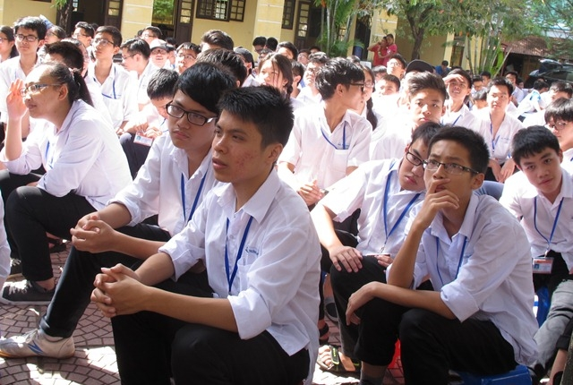

Hướng dẫn tuyển thẳng - ưu tiên xét tuyển vào đại học - cao đẳng năm 2016

Lần cập nhật cuối lúc Thứ tư, 06 Tháng 4 2016 10:22 Viết bởi Administrator Thứ tư, 23 Tháng 3 2016 14:13
Công tác tuyển thẳng, ưu tiên xét tuyển và xét tuyển thẳng vào đại học, cao đẳng (ĐH, CĐ) hệ chính quy năm 2016 được thực hiện theo Quy chế tuyển sinh ĐH, CĐ hệ chính quy ban hành kèm theo Thông tư số 03/2015/TT-BGDĐT ngày 26 tháng 02 năm 2015; sửa đổi, bổ sung tại Thông tư số 03/2016/TT-BGDĐT ngày 14 tháng 3 năm 2016 của Bộ trưởng Bộ Giáo dục và Đào tạo (gọi tắt là Quy chế tuyển sinh).

Hướng dẫn tuyển thẳng và UTXT ĐH, CĐ của Bộ Giáo dục.
Hướng dẫn tuyển thẳng , ưu tiên xét tuyển Đại học, Cao đẳng năm 2016 của Sở GD&ĐT Quảng Nam
Để thống nhất thực hiện công tác tuyển thẳng, ưu tiên xét tuyển và xét tuyển thẳng trong các cơ sở giáo dục đại học, các trường cao đẳng, Bộ Giáo dục và Đào tạo (GDĐT) hướng dẫn các đại học, học viện; các trường ĐH, CĐ (gọi chung là các trường) và các sở GDĐT một số nội dung sau:
I. QUY ĐỊNH CHUNG
1. Danh mục ngành tuyển thẳng
a) Đối với thí sinh đoạt giải Kỳ thi chọn học sinh giỏi quốc gia:
- Danh mục các ngành ĐH và CĐ đúng hoặc gần với môn thi học sinh giỏi (HSG) quốc gia được quy định tại Phụ lục 4 và Phụ lục 5 của văn bản này;
- Các trường có thể bổ sung thêm các ngành đúng và ngành gần đối với từng môn thi HSG quốc gia phù hợp với yêu cầu đầu vào các ngành đào tạo của trường;
- Nếu không tiếp tục tuyển thẳng vào một số ngành đúng hoặc ngành gần với môn thi HSG quốc gia, các trường phải báo cáo Bộ GDĐT và thông báo công khai trên trang thông tin điện tử của trường, các phương tiện thông tin đại chúng khác ít nhất 3 năm trước khi áp dụng.
b) Đối với thí sinh đoạt giải Cuộc thi Khoa học kỹ thuật quốc gia:
Căn cứ vào kết quả dự án, đề tài nghiên cứu khoa học kỹ thuật của thí sinh đoạt giải và danh mục các ngành đúng, ngành gần quy định tại Phụ lục 4 và 5 của văn bản này, Giám đốc các đại học, học viện; Hiệu trưởng các trường ĐH, CĐ xem xét tuyển thẳng vào ngành học phù hợp với kết quả dự án hoặc đề tài mà thí sinh đoạt giải.
2. Bảo lưu chế độ tuyển thẳng và ưu tiên xét tuyển
Thí sinh đoạt giải kỳ thi chọn HSG quốc gia, đoạt giải Cuộc thi Khoa học kỹ thuật cấp quốc gia, nếu chưa tốt nghiệp trung học phổ thông (THPT) được bảo lưu để hưởng chế độ tuyển thẳng (hoặc ưu tiên xét tuyển) sau khi tốt nghiệp THPT theo quy định của các trường tại năm thí sinh đoạt giải.
3. Chỉ tiêu tuyển thẳng và ưu tiên xét tuyển
Căn cứ vào tình hình cụ thể của công tác tuyển sinh, các trường xác định chỉ tiêu tuyển thẳng và ưu tiên xét tuyển theo từng ngành hoặc chung cho tất cả các ngành, đảm bảo tổng chỉ tiêu không thấp hơn số lượng thí sinh tuyển thẳng và ưu tiên xét tuyển vào trường năm 2015. Trong đó, lưu ý:
a) Chỉ tiêu tuyển thẳng vào trường ở các ngành mới do trường công bố (ngoài danh mục quy định tại Phụ lục 4 hoặc Phụ lục 5 của văn bản này) không được vượt quá 25% của tổng số thí sinh được tuyển thẳng năm 2016;
b) Chỉ tiêu tuyển thẳng vào các trường không thực hiện tuyển thẳng năm 2015 không được vượt quá 0,25% so với tổng chỉ tiêu tuyển sinh chính qui của trường.
4. Tổ chức tuyển thẳng và ưu tiên xét tuyển
a) Nguyên tắc: xét tuyển vào ngành đúng trước, sau đó xét tuyển vào ngành gần;
b) Các trường công bố công khai tiêu chí, quy trình xét và xếp ngành học tuyển thẳng và ưu tiên xét tuyển của trường trên trang thông tin điện tử của trường, trang thông tin thi tuyển sinh của Bộ GDĐT và trên các phương tiện thông tin đại chúng;
c) Căn cứ chỉ tiêu đã xác định và tiêu chí, quy trình đã công bố, các trường tổ chức tuyển thẳng và ưu tiên xét tuyển.
II. HỒ SƠ ĐĂNG KÝ TUYỂN THẲNG, ƯU TIÊN XÉT TUYỂN VÀ XÉT TUYỂN THẲNG
1. Hồ sơ đăng ký tuyển thẳng
Thí sinh thuộc diện tuyển thẳng theo quy định tại các điểm a, b, c, d, đ, e khoản 2 Điều 7 của Quy chế tuyển sinh gửi hồ sơ về sở GDĐT trước ngày 20/5/2016. Thí sinh có thể đăng ký tuyển thẳng vào tối đa 2 trường. Sau khi có thông báo của trường, thí sinh được tuyển thẳng phải nộp bản chính các giấy chứng nhận quy định tại điểm b dưới đây cho trường có nguyện vọng nhập học trước ngày 10 tháng 8 năm 2016 (tính ngày theo dấu bưu điện nếu nộp qua bưu điện bằng thư chuyển phát nhanh). Quá thời hạn này thí sinh không nộp các giấy tờ qui định vừa nêu xem như từ chối nhập học.
Hồ sơ đăng ký tuyển thẳng gồm:
a) Phiếu đăng ký tuyển thẳng (Phụ lục 1);
b) Bản sao hợp lệ: chứng nhận là thành viên tham dự kỳ thi chọn đội tuyển quốc gia dự thi Olympic khu vực và quốc tế hoặc chứng nhận là thành viên đội tuyển tham dự cuộc thi Khoa học kỹ thuật quốc tế (có tên trong danh sách của Bộ GDĐT); Giấy chứng nhận đoạt giải Kỳ thi chọn HSG quốc gia; Giấy chứng nhận đoạt giải Cuộc thi Khoa học kỹ thuật quốc gia và Giấy chứng nhận đoạt giải quốc tế về thể dục thể thao, năng khiếu nghệ thuật và giấy chứng nhận các đối tượng ưu tiên tuyển thẳng khác;
c) Hai phong bì đã dán tem và ghi rõ họ tên, địa chỉ liên lạc, số điện thoại của thí sinh; hai ảnh chân dung cỡ 4 x 6.
2. Hồ sơ đăng ký ưu tiên xét tuyển
Thí sinh thuộc diện quy định tại các điểm a, b, c khoản 3 Điều 7 của Quy chế tuyển sinh không sử dụng quyền tuyển thẳng cần nộp hồ sơ đăng ký dự thi THPT quốc gia trong thời hạn từ ngày 01 tháng 4 đến hết ngày 30 tháng 4 năm 2016.
Sau khi có kết quả thi, nộp hồ sơ đăng ký ưu tiên xét tuyển vào các trường ĐH, CĐ theo lịch tuyển sinh của Bộ. Hồ sơ đăng ký ưu tiên xét tuyển gồm:
a) Phiếu đăng ký xét tuyển (phụ lục III của công văn số 981/BGDĐT-KTKĐCLGD ngày 15 tháng 3 năm 2016);
b) Phiếu đăng ký ưu tiên xét tuyển (Phụ lục 2);
c) Giấy chứng nhận đoạt giải Kỳ thi chọn HSG quốc gia; Giấy chứng nhận đoạt giải Cuộc thi Khoa học kỹ thuật quốc gia, quốc tế; Giấy chứng nhận đoạt giải quốc tế về thể dục thể thao, năng khiếu nghệ thuật.
3. Hồ sơ đăng ký xét tuyển thẳng
Hồ sơ đăng ký xét tuyển thẳng của đối tượng quy định tại điểm i khoản 2 Điều 7 của Quy chế tuyển sinh, gửi về sở GDĐT trước ngày 20/5/2016. Hồ sơ gồm:
a) Phiếu đăng ký xét tuyển thẳng (Phụ lục 3);
b) Bản sao hợp lệ học bạ 3 năm học trung học phổ thông;
d) Hai phong bì đã dán tem và ghi rõ họ tên, địa chỉ liên lạc, số điện thoại của thí sinh; hai ảnh chân dung cỡ 4 x 6;
đ) Bản sao hợp lệ hộ khẩu thường trú;
Tất cả các đối tượng trên khi trúng tuyển và về trường nhập học, phải nộp các giấy tờ quy định tại khoản 3 Điều 14 của Quy chế tuyển sinh.
4. Lệ phí xét tuyển
Lệ phí tuyển thẳng, ưu tiên xét tuyển thẳng và đăng ký xét tuyển thẳng là 30.000đ /thí sinh/hồ sơ (trong đó nộp cho sở giáo dục và đào tạo 20.000 đồng, nộp cho trường khi đến nhập học 10.000 đồng).
III. TRÁCH NHIỆM CỦA CÁC SỞ GIÁO DỤC VÀ ĐÀO TẠO VÀ CÁC TRƯỜNG
1. Trách nhiệm của các sở GDĐT:
a) Hướng dẫn các trường phổ thông có thí sinh thuộc diện tuyển thẳng, ưu tiên xét tuyển và xét tuyển thẳng khai phiếu đăng ký tuyển thẳng, phiếu đăng ký ưu tiên xét tuyển và phiếu đăng ký xét tuyển thẳng.
b) Trước ngày 20/7/2016, gửi hồ sơ đăng ký tuyển thẳng; hồ sơ đăng ký xét tuyển thẳng kèm theo danh sách (Phụ lục 6; Phụ lục 7) cho các trường thí sinh đăng ký tuyển thẳng và xét tuyển thẳng.
2. Trách nhiệm của các đại học, học viện; các trường ĐH, CĐ:
a) Căn cứ quy định của Quy chế tuyển sinh và danh mục ngành đào tạo được tuyển thẳng theo quy định tại khoản 1, phần I của văn bản này, các trường quy định cụ thể ngành thí sinh được tuyển thẳng tương ứng với loại giải và môn thi của thi sinh đoạt giải; quy định cụ thể về ưu tiên xét tuyển và xét tuyển thẳng; quy trình xét xếp ngành học tuyển thẳng, ưu tiên xét tuyển và xét tuyển thẳng của trường, công bố công khai trên trang thông tin điện tử của trường, trang thông tin thi tuyển sinh của Bộ GDĐT và trên các phương tiện thông tin đại chúng trước ngày 20/4/2016.
b) Tổ chức xét tuyển cho những thí sinh thuộc diện ưu tiên xét tuyển đã đăng ký vào trường.
c) Trước ngày 05/8/2016:
- Gửi kết quả tuyển thẳng cho các sở GDĐT để thông báo cho thí sinh;
- Tổ chức xét tuyển những thí sinh thuộc diện xét tuyển thẳng đã nộp hồ sơ đăng ký xét tuyển vào trường và gửi kết quả xét tuyển thẳng cho các sở GDĐT thông báo cho thí sinh.
d) Báo cáo kết quả tuyển thẳng, ưu tiên xét tuyển và xét tuyển thẳng về Bộ GDĐT (Cục Khảo thí và Kiểm định chất lượng giáo dục) trước ngày 01/9/2016.
Các sở GDĐT; các đại học, học viện; các trường ĐH, CĐ triển khai thực hiện công văn này. Trong quá trình thực hiện nếu có vướng mắc, liên hệ trực tiếp với Cục Khảo thí và Kiểm định chất lượng giáo dục để kịp thời xử lý./.
Bộ Giáo dục và Đào tạo (moet.edu.vn)
- 29/05/2016 09:41 - Danh sách thí sinh tuyển sinh 10 THPT Chuyên năm h…
- 12/05/2016 08:29 - Thư ngỏ tuyển sinh 10 THPT Chuyên Nguyễn Bỉnh Khiê…
- 21/04/2016 09:34 - Ưu tiên tuyển thẳng học sinh giỏi các trường chuyê…
- 05/04/2016 10:22 - Văn bản hợp nhất TT 02-2015 và 02-2016 Thông tin v…
- 29/03/2016 10:09 - Thông tin tuyển sinh đại học - cao đẳng hệ chính q…
- 23/03/2016 14:03 - Thông tư số 03-2016-TT-BGDĐT về việc sửa đổi bổ su…
- 17/03/2016 14:03 - Hướng dẫn tổ chức công tác tuyển sinh ĐH-CĐ hệ chí…
- 16/02/2016 14:51 - Hội trại Mừng Đảng - Mừng Xuân
- 27/11/2015 08:34 - Từ Huyền thoại Everest đến Học trò xứ Quảng
- 25/11/2015 09:42 - Lễ ra mắt game show Học trò xứ Quảng